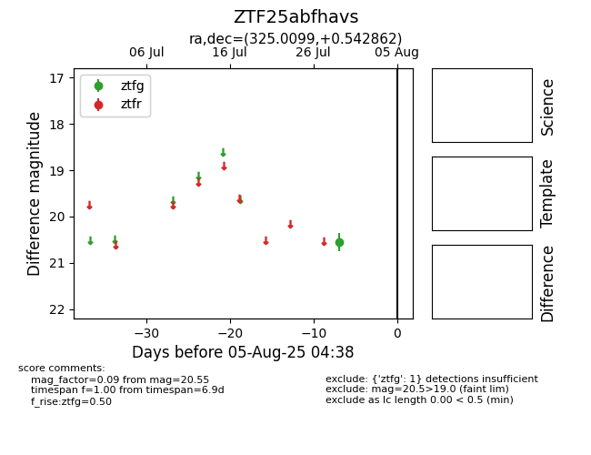

Target ZTF25abfhavs at 2025-08-05 04:38, see:
FINK: fink-portal.org/ZTF25abfhavs
Lasair: lasair-ztf.lsst.ac.uk/objects/ZTF25abfhavs
ALeRCE: alerce.online/object/ZTF25abfhavs
alt names
ZTF25abfhavs (ztf,fink)
coordinates:
equatorial (ra, dec) = (325.0099,+0.54286)
galactic (l, b) = (55.9145,-36.36344)
photometry
last ztfg=20.55
1 ztfg detections
